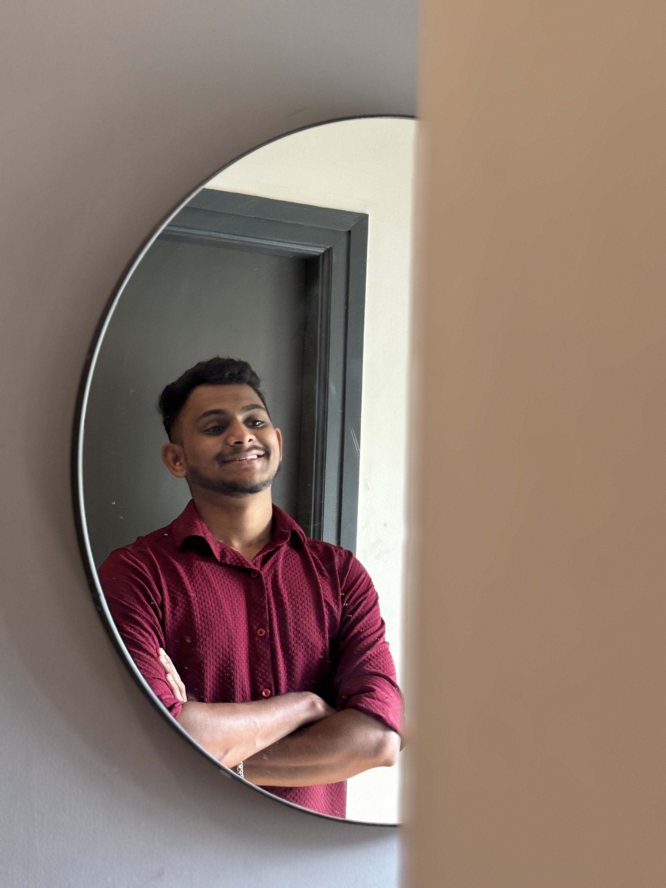
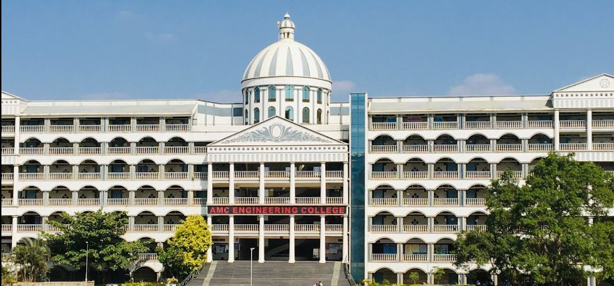
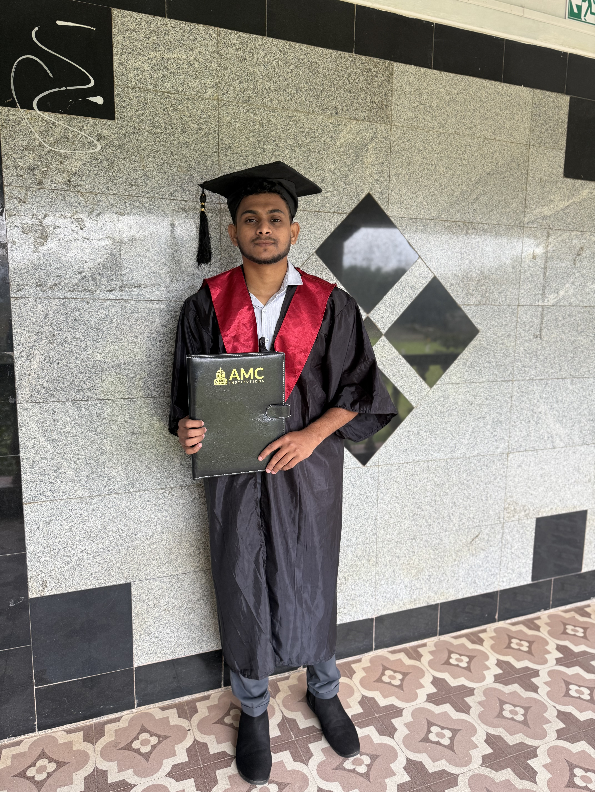
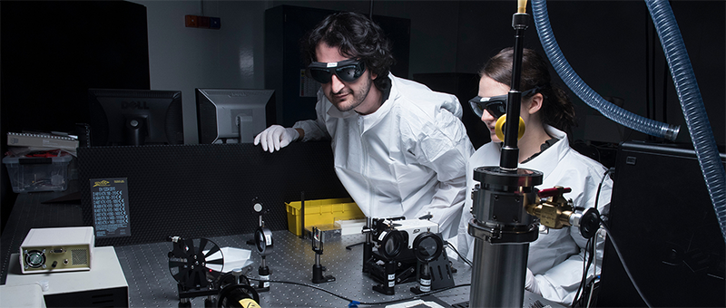
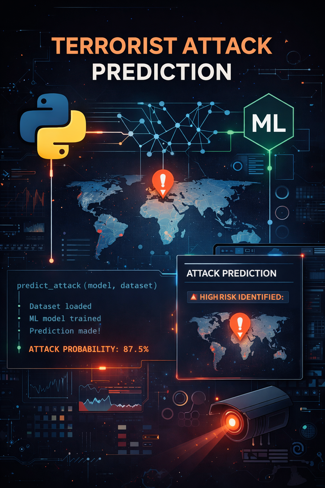
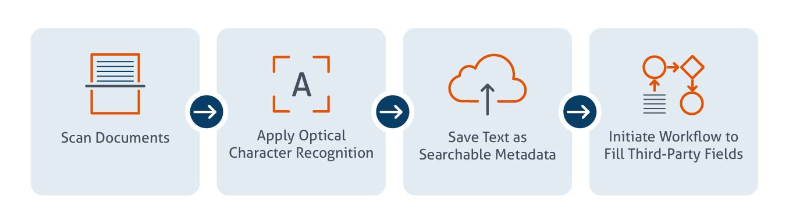

I am a Software Engineer fresher and a recent Information Science graduate with strong interest in Python, Machine Learning, and software development.
I enjoy working on real-world projects, learning new technologies, and improving my problem-solving skills.
Beyond technology, I am deeply passionate about fitness, which helps me stay disciplined, focused, and mentally strong. I have a keen interest in photography and cinematography, where I enjoy capturing moments, exploring visual storytelling, and working with editing tools to bring creative ideas to life.
I also love watching movies and web series, which inspires my interest in storytelling, direction, and visual aesthetics. In my free time, I enjoy cooking, as it allows me to experiment, be creative, and unwind.
I believe these interests complement my technical mindset by enhancing my creativity, attention to detail, and problem-solving abilities. I am motivated, adaptable, and eager to contribute to professional software development teams while continuously growing as both an engineer and an individual.
AMC Engineering College, Bengaluru



Sahyadri Polytechnic, Thirthahalli
Machine learning based predictive analysis project.

Automated OCR-based document processing system.

Name: Varun K R
Email: varununfolded@gmail.com